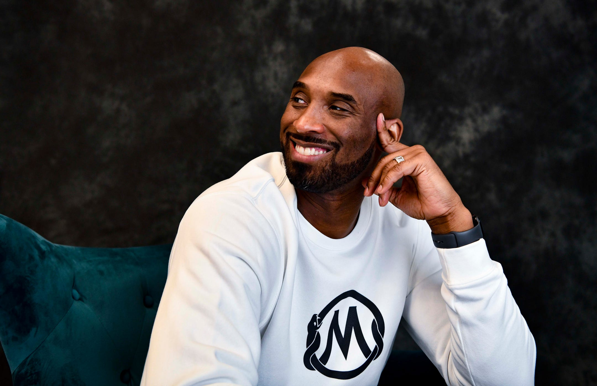

Kobe Bryant: An Inspirational Person
Kobe Bryant approached his post-basketball life with the same Mamba Mentality he displayed as a player: an audacious, unyielding will to motivate the next generation. -- Ramona Shelburne
"I have nothing in common with lazy people who blame others for their lack of success. Great things come from hard work and perseverance. No excuses."
ACCOLADES & STATS
Bryant started filling his trophy case early, winning the Slam Dunk Contest at All-Star Weekend as a rookie in 1997. He also won All-Star MVP honors, scoring titles and more through out of his career.
- 4x All-Star Game MVP
- Dunk Contest Champion
- All-Rookie
- All-NBA
- All-Defense
- Scoring Champ
- West Conf Player of the Month
- MVP
- Finals MVP
- 1,346 Games
- 48,637 Minutes
- 33,643 Points
- 7,047 Rebounds
- 6,306 Assists
- 1,944 Steals